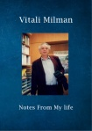

Страницы авторов "Тёмного леса"
Пишите нам! temnyjles@narod.ru
| Заметки из моей жизни (в формате pdf, на английском и русском языке) |  |
| Художница Ира Рылеева (в формате pdf) | |
| Художница Лидия Мандель (в формате pdf) - расширенная версия | |
| Короткие истории (в формате pdf) | |
| Увлечение искусством (в формате pdf) | |
| Сознание животных. Жизнь и сознание. Наблюдения о традициях (в формате pdf) | |
| Короткие истории (в формате pdf, на английском языке) Short Stories (in pdf format, in English) | |
| Увлечение искусством (в формате pdf, на английском языке) Passion for Art (in pdf format, in English) | |
| Сознание животных. Жизнь и сознание. Наблюдения о традициях (в формате pdf, на английском языке) Consciousness of the Animals, Life and Consciousness, Observations on Traditions (in (pdf format, in English) | |
| Эпизоды из моей жизни (в формате pdf) | |
| Короткие Зарисовки (в формате pdf) | |
| Короткие Зарисовки (в формате pdf, на английском языке) Vignettes of my life (pdf format, in English) |
Главная страница сайта
Последнее изменение страницы 26 Jan 2021
{kind=link}